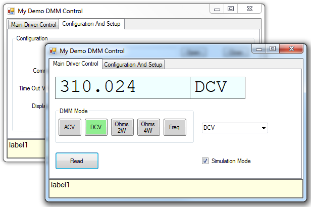

As
mentioned earlier (see Part 2), the
worker class (DmmDvr.cs in this example) should never interface directly with
GUI components or controls.
All communication to the GUI from the worker
class should be through events and only events.
Creating (or sourcing) an event in .NET is
relatively easy.
To pass data using an event, create a class object that inherits from System.EventArgs. Using System.EventArgs allows us to multicast events, meaning they can hold references to more than one event handler. We can instantiate any number of forms and assign our driver class object to each form. This allows us to bring up multiple forms, all “talking” to the same back-end driver object, and all getting driver update events. This is a great feature if the form has multiple tabs and we want to view two or more of the tabs simultaneously as shown below.

An event is just a message sent by an object to indicate an occurrence of something. Adding an event to the worker class is straightforward in .NET.
public
event
DeviceEventHandler
DeviceEvent;
public
delegate
void
DeviceEventHandler(object sender,DeviceEventArgs
args);
We
can use any object we wish to pass information back through the event as long as
the object inherits from System.EventArgs.
For our driver example, we will be passing back
state information (a class object), status updates as strings, and DMM readings.
Since the data can be almost any type,
our
argument list needs to contain an attribute so we know what to do with the data
when we get it.
We use the attribute to “unpack” the data in
the event handler in the GUI class.
Here is an example of defining a class that we
might use to fire events.
{
public
DeviceEventAttribute
attribute {get;
set;}
public object
dataObj { get; set;
}
}
Note that
DeviceEventAttribute is
just another enum type:
If the DMM changes state via
a method call, we set the state variable for the device and fire an event to
update our GUI.
StateInfo can be any class
object that holds current state information (mode, device descriptor, etc).
DeviceEventArgs args =
new
DeviceEventArgs {
dataAttribute = DeviceEventAttribute.StateChange, dataObj = _stateInfo };
// Fire
the event to inform our GUI
DeviceEvent(this,
args);
Develeper’s Note: Notice the
use of object initializers when we “new up” the object.
This is a feature added to .NET 3.0 and later. It is an excellent
timesaver when creating drivers because of the often extensive use of
properties.
The code shown above
will be repeated for all device state changes so it is best to put that code in
a helper function, such as
FireEvent.
The FireEvent method can also check for zero or more clients subscribing
to the events and take action accordingly.
For example:
protected
void
FireEvent(DeviceEventArgs args)
{
DeviceEventHandler handler = DeviceEvent;
//
Get the list of all clients
Delegate[]
delegates =
handler.GetInvocationList();
foreach
(Delegate del in
delegates
{
DeviceEventHandler
sink = (DeviceEventHandler)del;
sink.BeginInvoke(this,
args,
new AsyncCallback(EndFireEvent),
null);
}
}
As soon as the event
DeviceEvent
is placed in the
worker class, it will be available through Visual Studio “intellisense”.
The DeviceEvent handler definition will be
inserted as follows:
Just hit Tab to auto-generate the event handler.
myDvr.DeviceEvent += new
DeviceEventHandler(myDvr_DeviceEvent);
void
myDvr_DeviceEvent(
object sender,
DeviceEventArgs args)
{
throw
new
NotImplementedException();
}
This event handler
in the GUI class will handle all events thrown by the worker class.
The immediate advantage of using an
event-driven design is that the GUI can be updated as a “live” GUI, reflecting
the actual state of the hardware.
For example, a host process can make a driver
call, such as
myDvr.Measure(reading);
The “Measure” method makes a measurement, then fires an event with the measurement data and the attribute Reading. The GUI catches the event and updates the display. Here is example code to process the event.
{
switch
(args.dataAttribute)
{
case
DeviceEventAttribute.StateChange:
_stateInfo
= args.dataObj as
DmmDvr.DmmStateInformation;
comboBoxMode.SelectedIndex = (int)_stateInfo.mode;
break;
case
DeviceEventAttribute.Reading:
double reading = (double)args.dataObj;
labelReading.Text = reading.ToString()
break;
}
}
see also: Creating .NET Drivers - An Overview | Creating .NET Drivers - Part 2 | Using the SDK | Constants
Astronics Test Systems
Last updated on August 12, 2015 by D. Ignacio